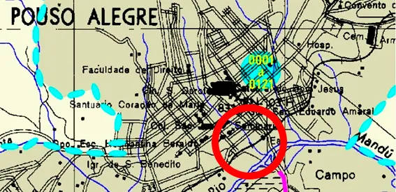

Pouso Alegre está travada há 10 meses por causa da obra que envolve a construção do Atacarejo Villefort, na Avenida Perimetral, uma das principais vias de acesso ao centro da cidade. Diante de uma série de erros e transtornos, a Prefeitura decidiu embargar a obra no dia 11 de novembro.
Após um mês de embargo, nada parece melhorar. Recorrentemente, o asfalto da avenida tem cedido, provocando um verdadeiro inferno na vida dos motoristas e dos moradores da região. Esse desastre é consequência da irresponsabilidade das autoridades, que permitiram o empreendimento em um terreno que é cedido em servidão à Prefeitura.
Como está catalogado em mapas oficiais, há uma passagem de um córrego que percorre toda a extensão da Avenida Dr. João Beraldo e atravessa o lote para desaguar no Rio Mandu. Por conta disso, há inúmeras restrições construtivas na região, como por exemplo, a caracterização de uma faixa non aedificandi. ¹
Para “driblar” essas restrições, foi proposto ao município desviar o curso d’água, retirando artificialmente o córrego de dentro do terreno. Apesar de ser uma obra de alto risco ambiental, a tramitação na Prefeitura ocorreu em tempo recorde, embora a cidade seja conhecida por sua demora na tramitação de projetos.
Além disso, a construção do Atacarejo Villefort foi autorizada antes mesmo da conclusão da obra para o desvio do córrego. Com todos os problemas gerados por esse empreendimento ambicioso, a Prefeitura se viu obrigada a embargar a construção do Supermercado, que já se encontrava na fase de cobertura em seu terreno de 9500 metros quadrados.
Infelizmente, os moradores da região não acreditam que o embargo será suficiente para resolver o problema, considerando que o córrego evita possíveis alagamentos, como já ocorreu anteriormente, e seu desvio sem o planejamento correto pode causar uma catástrofe, já sendo possível identificar sinais de afundamento do asfalto.
A falta de responsabilidade das autoridades do município transformaram uma obra que favorece a construção do Supermercado em uma espécie de “barragem”, que tem causado terror à população local. Os problemas estão longe de acabar e a pergunta que fica é: por que os responsáveis decidiram arriscar tanto nessa obra? Quem está ganhando com isso? Certamente não é a população!
¹ Em português: faixa não edificante, ou seja, onde não é possível construir POR SEGURANÇA.